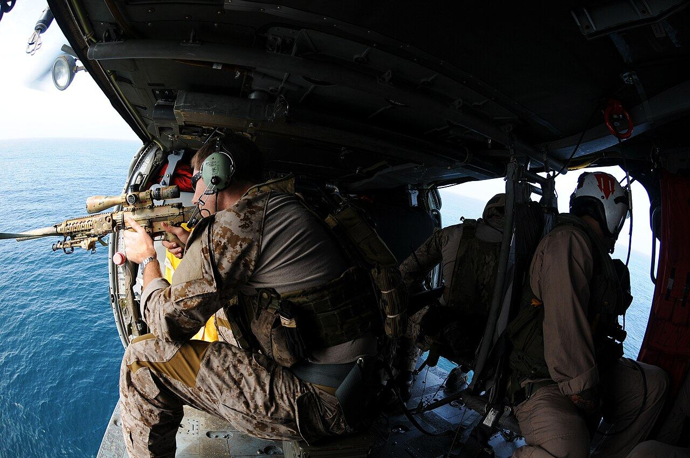
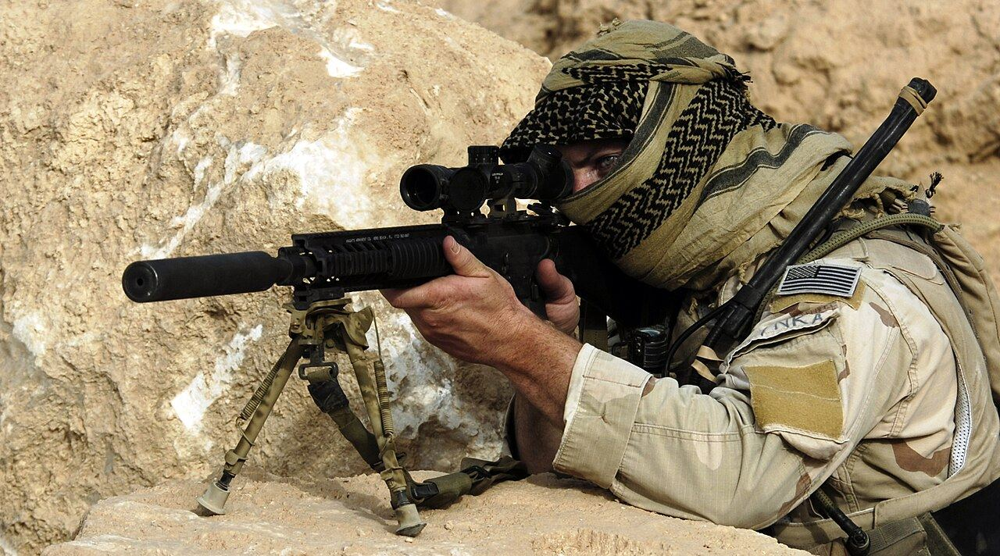

Sobre o filme
Chris Kyle cresceu no Texas, se alistou na Marinha e virou atirador de elite dos SEALs. Em quatro missões no Iraque, a precisão dele salva a vida de muitos colegas e transforma Kyle em lenda entre os soldados.
A cada volta para casa, fica mais difícil deixar a guerra para trás. O filme acompanha esse conflito entre o dever no front e a família que o espera, com Taya, sua esposa.
- Direção: Clint Eastwood
- Roteiro: Jason Hall
- Baseado em: autobiografia de Chris Kyle (2012)
- Estreia no Brasil: fevereiro de 2015
Elenco e direção
-
Bradley Cooper
Chris Kyle
-
Sienna Miller
Taya Kyle
-
Clint Eastwood
Direção
Prêmios e números
- 6 indicações ao Oscar 2015, incluindo Melhor Filme e Melhor Ator
- 1 Oscar conquistado: Melhor Edição de Som
- US$ 547 mi de bilheteria mundial, a maior entre os filmes de guerra até então
Um filme sobre o preço da guerra
Mais do que cenas de combate, Sniper Americano mostra o que acontece com quem volta: o silêncio em casa, os barulhos que lembram o campo de batalha e o esforço para reconstruir a vida.

Dúvidas frequentes
O filme é baseado em fatos reais?
Sim. A história vem da autobiografia de Chris Kyle, publicada em 2012, que conta a carreira dele nos Navy SEALs.
Quem dirigiu o filme?
Clint Eastwood, que também dirigiu filmes como "Menina de Ouro" e "Gran Torino".
Qual o gênero do filme?
É um drama de guerra biográfico, com cenas de ação e foco na vida pessoal do protagonista.
Quanto tempo dura?
Cerca de 2 horas e 12 minutos.